Click any cluster of notes to explore visitor responses
We began by understanding what already existed before designing something new. The previous group had built an early handwriting scanner and collected hundreds of Post-it responses, but some files and documentation were corrupted. We restored access, inspected the inherited code and dataset, and arranged a conversation with a former team member to understand how the scanner was intended to work.
We also visited the Philips Museum to study the physical feedback wall and the wider exhibition context. Seeing visitors move through the space helped us identify the UX problem: the exhibition encouraged active interaction with AI, but the final feedback activity became a static wall. The notes were personal and engaging, but visitors could not easily compare them, revisit them, or see how their thoughts connected to others.
As a team, we combined system review, museum observation, stakeholder conversations, team-canvas exercises, project questions, concept research, and feedback sessions. We used these activities to define the audience, understand the existing technical constraints, identify privacy and accessibility risks, and decide what the museum actually needed from the experience.
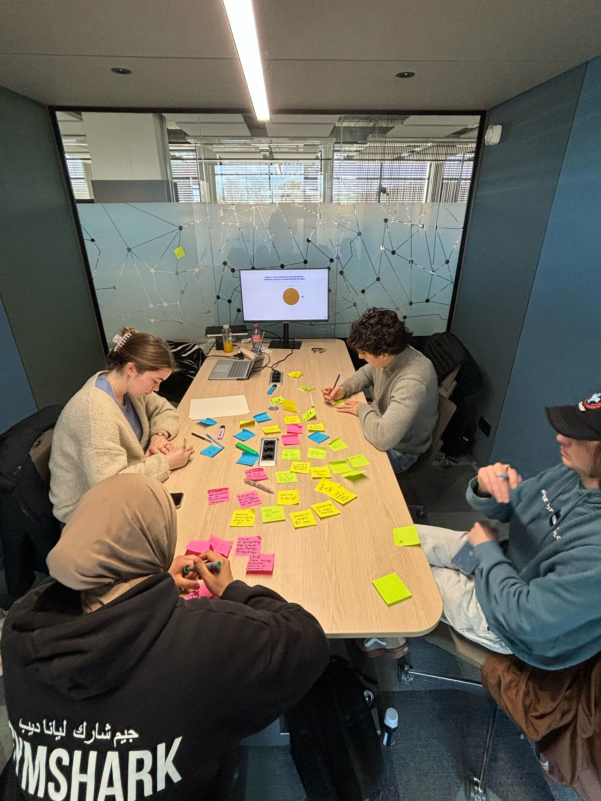
Only after the research did we create the proposal, “Your thoughts connected.” We explored a guided visitor journey, a feedback station, and an interactive wall that could process and display responses over time.
Optional ideas such as printed summaries and a future time capsule helped us explore the wider opportunity. The core UX direction stayed focused on making every visitor feel that their contribution had been noticed and connected.
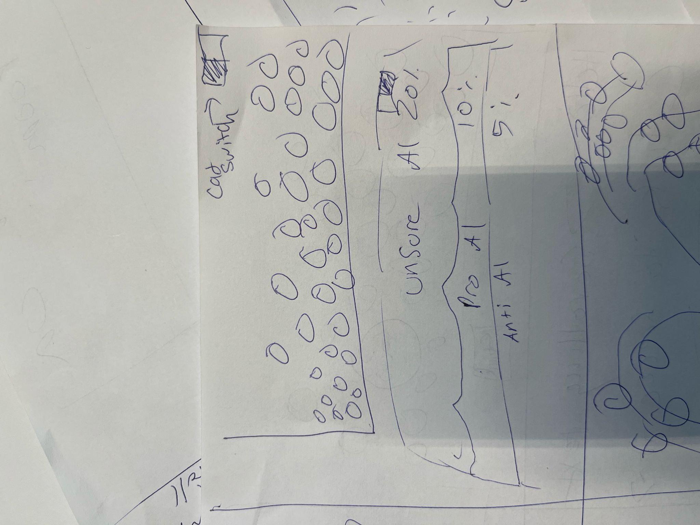
The research and museum visit led us to focus on an interactive feedback wall that kept the physical Post-it activity but made the growing collection easier to explore. Visitors would not just leave a note; they would see how their answer sat within a larger public conversation about AI.
We then chose a flexible Disciplined Agile Delivery approach and worked in short sprints. The first sprint focused on understanding the inherited work and defining the MVP; later sprints improved the functionality, visitor experience, and final delivery.
My design focus was translating that direction into an interface people could understand quickly, balancing an ambitious AI concept with a clear and approachable visitor experience.
We inherited an earlier scanner and around 650 existing Post-it responses, but the original files were partly corrupted and the previous OCR approach produced inconsistent transcriptions. I helped the team understand the existing system, then we moved the handwriting recognition to OpenAI Vision to improve the quality of the data entering the application.
The pipeline recognizes and transcribes a note, checks it for personal or inappropriate content, identifies the question it answers, translates the response between Dutch and English, and assigns an AI stance score. That result is stored with the response and used by the frontend to place it on the visualization.
By the end of the project, we had processed approximately 700 notes. The important design decision was to treat the model output as a useful interpretation, not an unquestionable truth.
On the frontend, I connected the response data to the graph, refined the interaction states, and worked with the backend developers whenever the data structure or endpoints needed to change for testing. This kept the AI output connected to a usable visitor experience.
We explored multiple ways to connect physical notes with a digital display, including timelines, clustered responses, and an interactive two-axis map. Early concepts were sketched and turned into Figma prototypes so we could compare the visitor journey before committing to implementation.
The interface had to explain an unfamiliar AI process in seconds. A visitor needed to know what to write, what would happen after scanning, and where their response appeared, without being confronted by a complex dashboard or technical language.
We reduced the experience to a simple visual promise: a visitor contributes one response and sees it become part of a shared map. The question screen, language switch, confirmation flow, and response visualization were designed as one continuous journey. Privacy guidance was placed before scanning so anonymity and content limits were clear at the moment they mattered.
I shaped the interaction flow and translated the concept into frontend behavior. The visitor's own response needed to be easy to recognize, while color, position, scale, and a visible language control communicated the result without requiring visitors to understand the AI behind it.
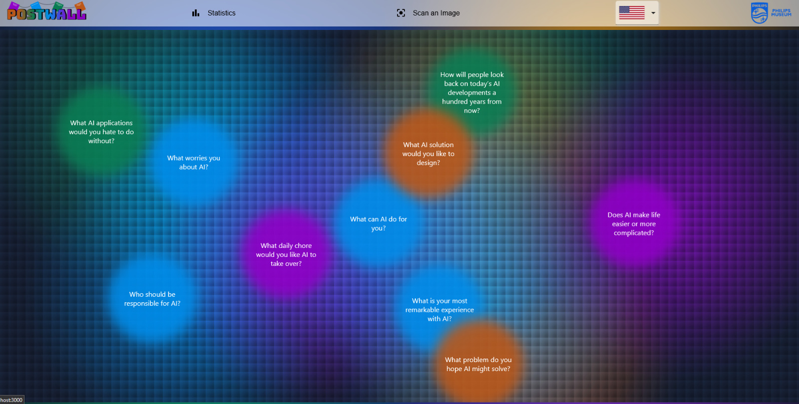
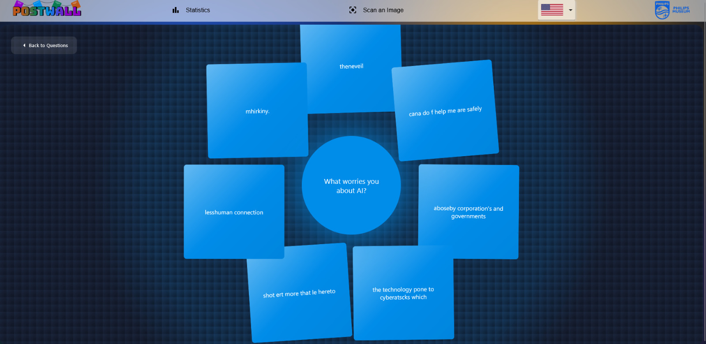
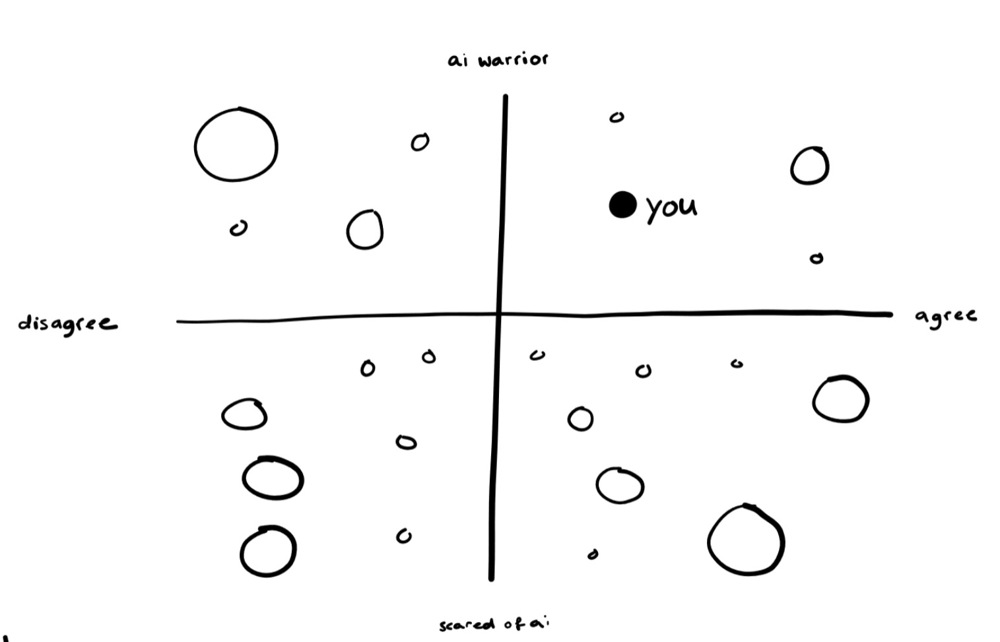
The final concept maps each answer onto two axes. The horizontal axis represents how optimistic or concerned a visitor feels about the future of AI. The vertical axis represents their current attitude toward AI, from sceptical to enthusiastic. A color and saturation level identify the question that the visitor answered.
Responses that land close together merge into larger clusters. This makes repeated ideas visible without requiring visitors to read hundreds of individual notes. A timeline filter adds another layer, letting people explore how perspectives change as more responses are collected.
I translated the interaction model into the frontend experience, connected incoming response data to the graph, and refined the interaction states. Working closely with the backend developers meant that a visitor's position could appear clearly and consistently as the prototype changed.
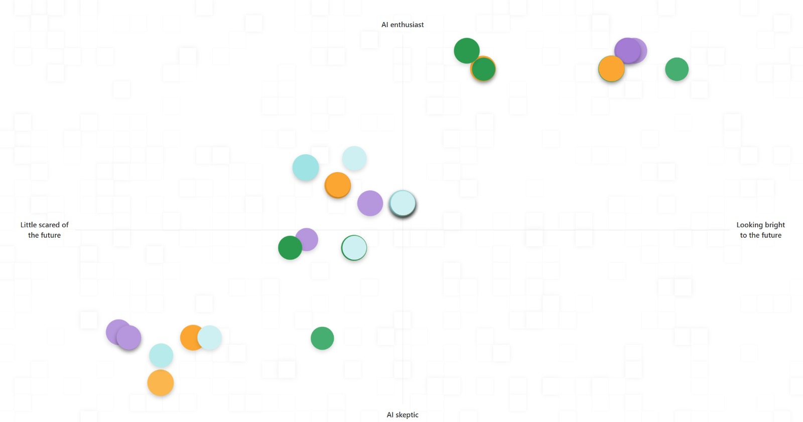
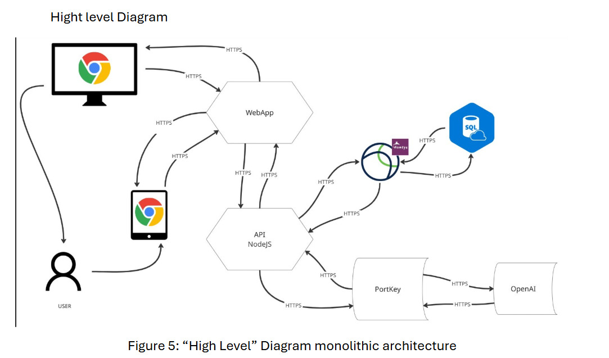
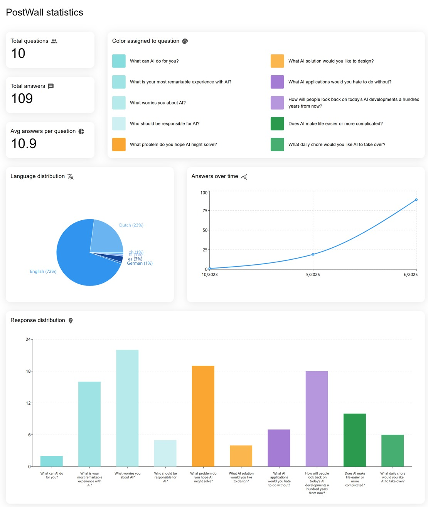
We tested the prototype with visitors at the Philips Museum and used the session to observe where people hesitated, what they understood immediately, and whether they could find their own response on the graph. The feedback pushed us toward clearer instructions, stronger visual hierarchy, and more emphasis on showing a visitor where their answer had landed.
We also coordinated the frontend and backend during testing so newly submitted responses could appear without a page refresh. That connection was essential: the experience only feels participatory when a visitor can see the result of their contribution.
I helped prepare the visitor test, explained the interface during the session, and used the feedback to simplify the presentation of the graph. During the final presentation, I demonstrated the working frontend and communicated how the interface, data pipeline, and visualization worked together.
At the event, we presented the working PostWall system at our table and used A/B testing with visitors to compare how people understood the experience and the visual feedback. This gave us direct evidence about what was clear, what needed explanation, and how people interacted with the live prototype.
Our team won first place for the best table and showcase at the event. The award recognized how we combined a functioning AI system, an interactive visualization, and a clear visitor demonstration. View the event recognition.
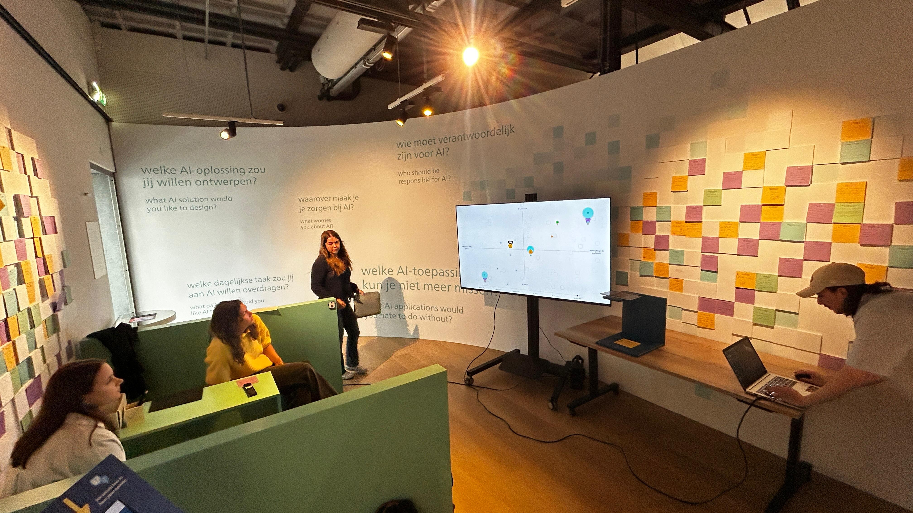
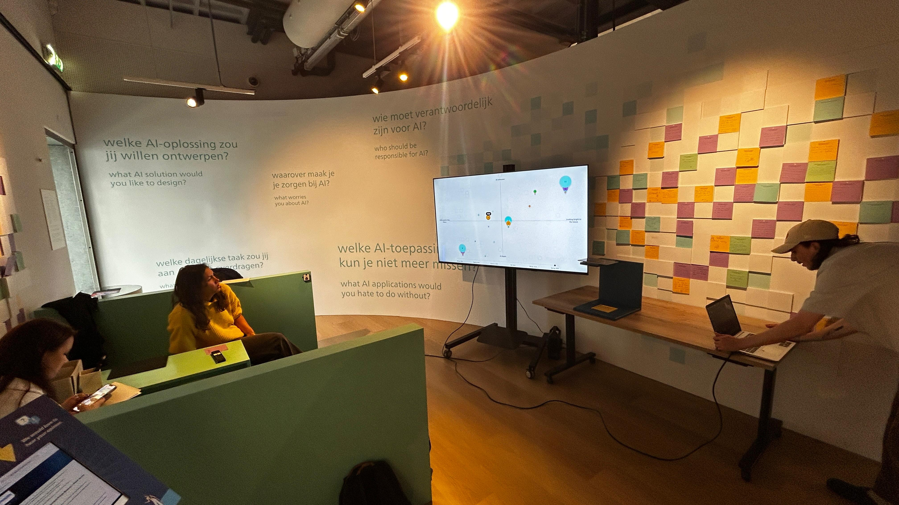
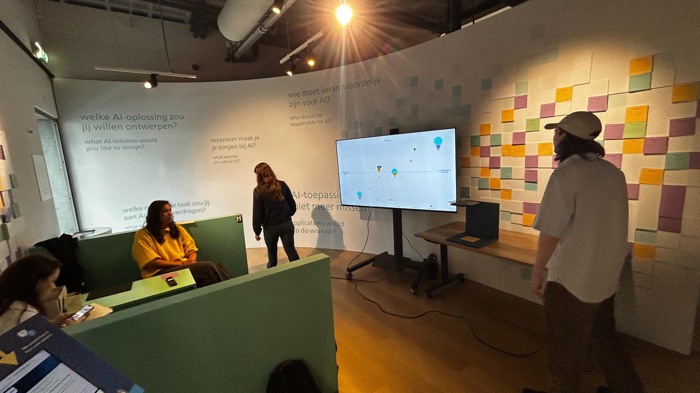
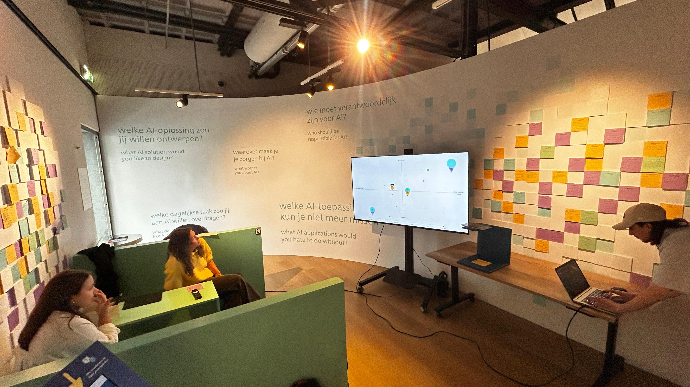
A walkthrough of the Phillips Wall concept, including the visitor feedback experience and the interactive visualization direction.
The final prototype turned a passive feedback wall into an evolving, shared visualization. Visitors could contribute to the exhibition and compare their perspective with the responses around them, while the museum gained a more structured way to understand engagement and recurring themes.
The project was presented at the Spring 2025 AI & Data Event, where our team won first place for the best table and showcase after demonstrating the working system and testing it with visitors. The Philips Museum also considered the concept for a future exhibition. The next version would benefit from a dedicated scanning station, stronger administrative tools, better handling of duplicate answers, broader language support, and a clearer human-review flow for uncertain classifications.
Reflecting on the development process, our multidisciplinary team encountered and successfully navigated several complex challenges. In the early stages, aligning schedules and establishing unified communication channels required deliberate effort, which we resolved by implementing structured weekly meetings and transparent communication standards. During the brainstorming phase, an abundance of creative possibilities made initial goal alignment difficult; we overcame this by filtering ideas against practical feasibility within the academic semester timeframe.
Working with the legacy codebase presented technical obstacles, as corrupted files and extraneous code required extensive cleaning and refactoring before we could establish a stable foundation. Mid-project collaboration friction was constructively addressed through a peer assessment feedback cycle, which improved interpersonal dynamics and unified the team around shared goals.
Ultimately, by combining diverse backgrounds in software engineering, UI/UX design, business, and creative media, we delivered a robust, engaging system that successfully bridges physical visitor interaction with cutting-edge artificial intelligence visualization.